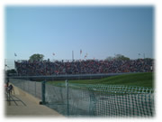
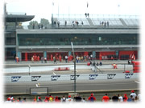
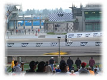
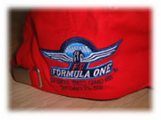

| ..*..*.. 2002年10月8日(火) 晴れ ..*..*.. 前回の日記では、F1についての説明を書きましたが、今日は、私たちの行ったインディアナポリスのグランプリの予選(予選)について書きたいと思います。  インディアナポリスはアメリカのインディアナ州にあります。私たちは7月に行くことを決めたのですが、個人ではもうホテルがとれなかったため、ツアー（パッケージ）で観戦することに決め、飛行機は自分たちでとりました。サンノゼ空港からもサンフランシスコ空港からも直行便はとれなくて、行きはミズーリ州セントルイス経由、帰りはオハイオ州シカゴ経由と、乗り継ぎの旅行でした。 カリフォルニア州とインディアナ州は時差があるので、金曜日のお昼過ぎにここを出て、インディアナポリスに着いたのは10時過ぎでした。インディアナポリスって、夏時間(Daylignt Saving)がない州なんです。だから、到着するまで今が何時なのかってことがわかりにくかったです。夏時間を採用しない理由が「ややこしくなるから」だそうなのですが、他の州が採用するのにこの州（他2州）が採用しないということで、よけいややこしくなってるのも事実です(^^; 朝はサーキットまでバスで行くのですが、７時集合なので、早起きしなくちゃならずたいへんでした。 私は、F1のレース全体が好きで、誰のファンということもないのですが、インディアナポリスにくる直前くらいから、佐藤琢磨ひとすじになりました。 インディアナポリスでの予選は自由席なので、どこにでも座れます。でも、予選の日は、ただの一度もチケットを見せてくれと言われませんでした(^^;。結構すいてて、ピットの真ん前から見下ろす形で見ることができました。そこに陣取って、ビールやハンバーガーやチップスを食べながら一日中観戦していました。 行ってすぐに、黄色いジョーダンの車が火をふいていたので、琢磨の車じゃないことを祈ったんだけど、琢磨のだったらしいです。 車の音がものすごく大きいので耳栓は必需品です。決勝の席では予選のときより音が小さかったのでしばらく耳栓をしなかったんだけど、しばらくして耳を触ったら痛くて、あわてて耳栓をしたりしました。 車の色で好きなのは断然ルノー。去年までベネトンがスポンサーだったこともあって、色の使い方がきれいです。テレビで見ていた通りでした。実際の目でみてきれいだと感動したのはザウバー。乗ってるドライバーがかっこいい（ハイドフェルド）ってことはあるんだけど、車の色もテレビで見るよりきれいで目立っていました。 予選は、決められた時間内に、1周の早さで早いタイムを出した人が、本戦で上の順位になります。たった１周、最速のタイムを出せばいいのです。 角ドライバーはピット(右上の写真)を出たり入ったりします。次は誰が出てくるのか、いつもドキドキしながら見ていました。会場の右の方に棒状の掲示板というか、順位と車のナンバーが、早いタイムを出した順にどんどん入れ替わるんだけど、次々とドライバーが出ては、タイムアタックをして、戻ってきて、また出て行く、を繰り返しているので、目が離せません。 本物の車を見たってことで、心が高鳴りました。１チームに２人ドライバーがいるでしょ。同じ色の車が２台あるわけです。テレビで見ているときは、解説があったりテロップが出たりするので誰が誰だかすぐわかるのだけど、実際観戦するときにはドライバーをヘルメットで見極めなくちゃいけないということがわかりました。たとえばジョーダンは、ヘルメットに赤いラインが入っていたら佐藤琢磨、グリーンのラインだったらフィジケラです。 ウィリアムズのラルフ・シューマッハ（ミハエル・シューマッハ）って、記事やコメントを読んでいるとマイペースな人って感じがするんだけど、実際、青いウィリアムズの車にレモン色のヘルメットで目立っていました(^^;。(ちょっと奇抜な色合わせ(^^;）  佐藤琢磨は、一時、長いこと4位だったので、このまま行くか？！と思ったんだけど、予選の結果は残念ながら15位でした。最初に火をふいてたし残念でした。右の写真は、佐藤琢磨のジョーダンの黄色いマシンが走っている瞬間をとらえました。 ホンダやトヨタにはあまり興味は持ちませんでした。私にとってはマシンのデザインに魅力がなってことと、フェラーリは別格としても、2位３位争いをしてくれるところに目がいきますね。ウィリアムズ、マクラーレン、ルノーあたりが出てくるとワクワクしました。 ザウバーは、ハイドフェルドとマッサが通常のドライバーなので、「マッサはヘルメットを変えたのかな？」と思っていたのですが、なんとマッサは今回初めて課せられるペナルティを受けた（出場したら出したタイムより10番下げてスタートさせられる）とかで、出場していず、来年の契約をしたオレンジアロウズだったフィレンツェンがザウバーから出ていました。あとで知りました。 そのオレンジアロウズは、資金不足から、前回と今回出場しませんでした。イギリスの電話会社の「オレンジ」はインディアナポリスのグランプリのスポンサーとして、オレンジ色の看板を出していたのですが、私は「オレンジ」自身が資金不足で困っていると思っていたので、なんだかその看板が寒々しく見えました。が、資金不足なのはオレンジアロウズで、「オレンジ」が困っているわけではないそうです(^^;  フェラーリは圧倒的な人気で、右のような帽子をかぶっている人が目立ちました。私も記念に買ってしまいました。本当は佐藤琢磨のグッズがあったら買おうと思っていたんだけど、なかったので、もうどこでもいいやと思って、今年強いフェラーリのキャップを記念に買ったんです。 フェラーリの他では、意外にジャガーの緑の帽子をかぶっている人もたくさんいました。ジャガーは今年ずっと弱かったのですが、８月以降だんだん強くなってきた感じです。でも、目立つとこはないと思うので、こんなにファンがいるのは不思議だったのですが、エンジンがコスワース（フォード）なので、アメリカの会社のエンジンとして応援している人がたくさんいるみたいでした。でも、今回も弱かったです。 予選の結果は、１位ミハエル・シューマッハ(フェラーリ)、2 バリチェロ(フェラーリ)、3 クルサード(マクラーレン)、4 モントーヤ(ウィリアムズ)、5 ラルフ・シューマッハ(ウィリアムズ)、6 ライコネン(マクラーレン)、7 ビルヌーブ(BARホンダ)、8 トゥルーリ(ルノー)、9 フィジケラ(ジョーダン)、10 ハイドフェルド(ザウバー)、11 フィレンツェン(ザウバー)、12 バニス(BARホンダ)、13 アーバイン(ジャガー)、14 バトン(ルノー)、15 佐藤琢磨(ジョーダン)、16 マクニッシュ(トヨタ)、17 デラロサ(ジャガー)、18 ウェバー(ミナルディ)、19 サロ(トヨタ)、20 ユーン(ミナルディ)でした。 そんなこんなで、見どころたくさんのF1の予選も終わり、そのあと、「ポルシェ／ミシュラン スーパーカップ」というのをやっていました。普通の形の車（ポルシェ）のレースです。私は前情報はなかったので、見ていただけだったのですが、これもなかなか面白かったです。 スタート直後に３台がぶつかって、真ん中のが少し宙に浮いて壊れかかって持ち直したのですが、その瞬間の歓声と見ていた人の顔の笑顔にびっくりしました。今まで、深刻な顔でF１を見ていた人たちが、水を得た魚のように喜んで、その後、和気あいあいとした笑顔に変わりました。 もともと、オーバル（長まる）を何百周も走るナスカー発祥の地のアメリカ人。ナスカーでは車同士がぶつかることは日常茶飯事で、バンパーがとれてもシャシーが壊れても完走することだってあります。だからやっぱり、クラッシュとか車同士のぶつかり合いが好きなんだなーと思いました。 そのときの車同士のぶつかり合いが何度もスクリーンで再生され、その後、壊れてしまった車（それでも走ってたけど）のオーナーらしき人がショックで目をつぶってしまった顔がアップになった瞬間も歓声があがっていました。でも、別に嫌みだとか、人の失敗を喜ぶという感じじゃなくて、起こったことに純粋に喜んで楽しんでいるようでした。F1だけだと、少し格調が高すぎるのかもしれませんね。こういう瞬間も大切なんですよ、きっと(^^) 写真は、左がポルシェたちがスタートグリッドに並んだところ、右が「ポルシェ／ミシュラン スーパーカップ」の表彰台です。予選は自由席だったので表彰台が見えましたが、本戦では見えませんでした。 次の日記は、グランプリ（本戦）について書こうと思っています。 |